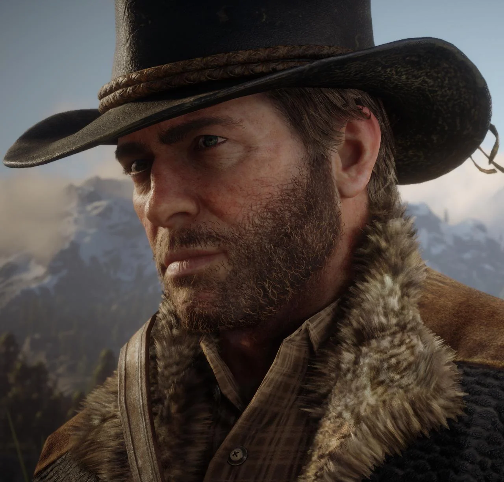

Carta da Mary para o Arthur
"My dear Arthur, You never showed up, and now, after looking at the newspapers I understand why. I don't imagine you will receive this letter but I nonetheless must send it. Arthur, oh, Arthur. I was just starting to dream the silliest and softest of dreams. I miss you, and I will always miss you but I cannot live like that, and it seems you cannot live any other way. When I'm with you, the world makes sense; but when we are apart, I see clearly that your world is not a world from which one can escape. I'm so sorry, for everything, for everything long ago and for starting up that business again. There's a good man within you, Arthur, but he is wrestling with a giant. And the giant... wins, time and again. You've broken my heart, again, and I fear I have broken yours. For that, I will never forgive myself but you must let me go now. I enclose a ring you gave me many years ago, when we were both young, not because I don't like it, but because I care for it far too much and it reminds me too much of you. I hope, one day... you will find some people in love who can use this, for it kept me thinking of you all these years, and I hope by returning it to you I can finally be free. Goodbye"

"VOCÊ É UM HOMEM MORTO"
"You're a dead man! I'm sending you straight to hell! Run now while you got the chance! You think you're walking away from this? Any luck you had is about to run dry! You're all cowards! Call yourself lawmen? You think I care who you are? Your law don't mean shit to me! I don't answer to you fools! You boys should've run away! You boys ain't up to much! You fools are gonna die! Just get out of here while you still can!"